01
法院 / 沙鹬方面申请限制令
他先在正式程序里证明，自己不是只会说漂亮话。
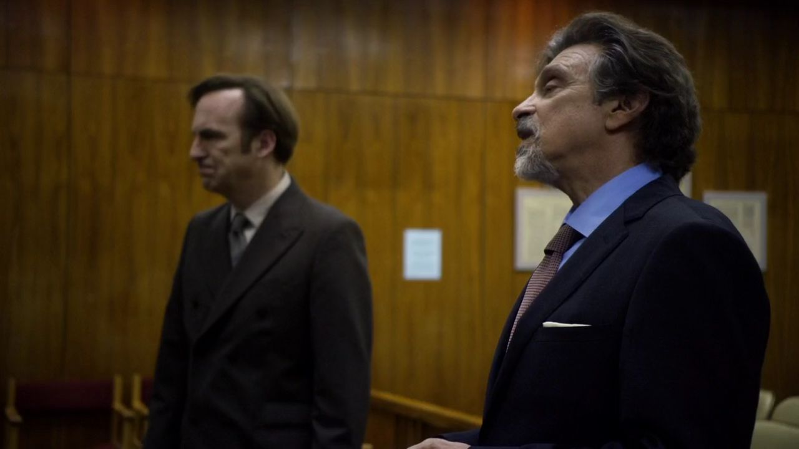
剧情事实沙鹬方面试图取得限制吉米接近住户的命令。吉米在程序中反驳，使这一申请未获准。 [1][2]
这一场为什么重要 · 个人解读
开场的胜利很具体：他已经能凭材料与论证争取实际空间。它给后面的排除增加了张力——问题不再能轻易被概括成他从未做过像样工作。程序里看得见的能力，与机构里愿不愿意接纳，仍可能分开。
因此 →对手随后改变了施压方式，让工作量本身成为障碍。

风骚律师 · 第一季第 09 集
他把真正的大案带到律所门前。
门打开了，接纳的却只有案子。
剧透边界 截至 S01E09，含本集结尾
12 个剧情节点 · 8 位人物 · 04 组冲突沙鹬案的增长证明了吉米的眼光，也暴露了单打独斗的资源限度。他终于带着值得被接纳的工作走进 HHM，却再次被留在门外。另一边，迈克没有带枪去应聘保镖，却更准确地读懂了风险。两条线都在问：专业能力怎样被辨认，而一个人又会用什么规则拒绝辨认？
读这一集，跟住三件事资源与排除 / 谁替谁说了拒绝 / 能力和身份的边界
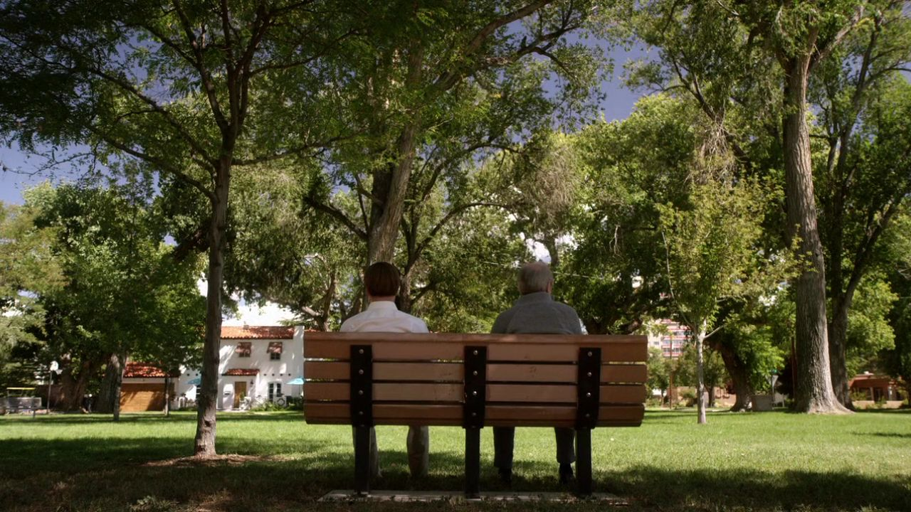
三幕梳理本集。每一场都区分剧情事实与个人解读，把行动、动机和后果连起来。
能力已经摆在眼前，资源却有自己的门槛。

剧情事实沙鹬方面试图取得限制吉米接近住户的命令。吉米在程序中反驳，使这一申请未获准。 [1][2]
开场的胜利很具体：他已经能凭材料与论证争取实际空间。它给后面的排除增加了张力——问题不再能轻易被概括成他从未做过像样工作。程序里看得见的能力，与机构里愿不愿意接纳，仍可能分开。
因此 →对手随后改变了施压方式，让工作量本身成为障碍。
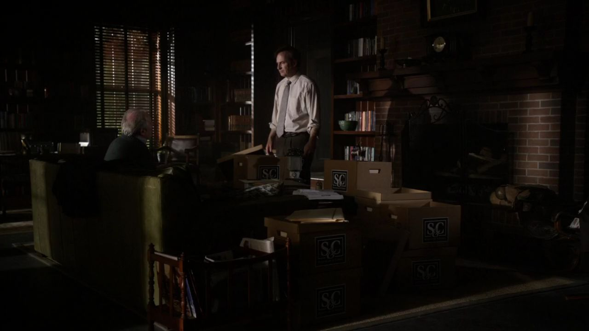
剧情事实沙鹬方面送来大量法律文件。查克认为案件需要更多资源，建议交给 HHM 一起推进，吉米虽犹豫，仍安排会面。 [1][2]
建议在工作层面有充分理由。能够发现并推进一个案子，不等于独自承担所有资料、程序和费用。吉米期待机构资源，也期待资源入口终于能成为自己的职业入口；两个期待暂时重合，却不必然同时实现。
因此 →他以为兄弟并肩能把自己带进去，夜里先发生了一通电话。
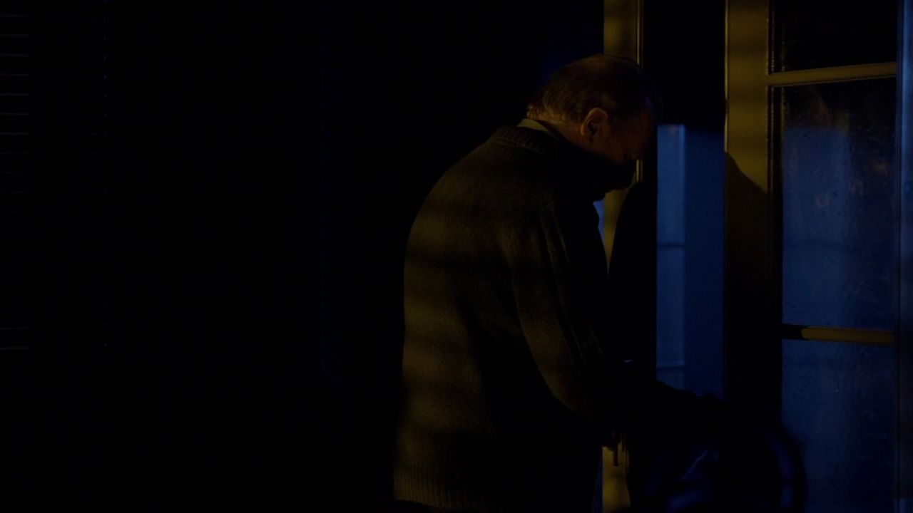
剧情事实吉米睡着后，查克使用他的手机打电话，并把手机放回。吉米当时没有察觉这次使用。 [1][2]
这通电话不能在当场就被解说成已知的全部阴谋；它首先是一条信息不对称。观众知道某件事发生过，吉米还不知道。后面他重新检查手机时，动作才与机构里的拒绝接上。
因此 →第二条故事线，也在用别人忽略的细节判断风险。
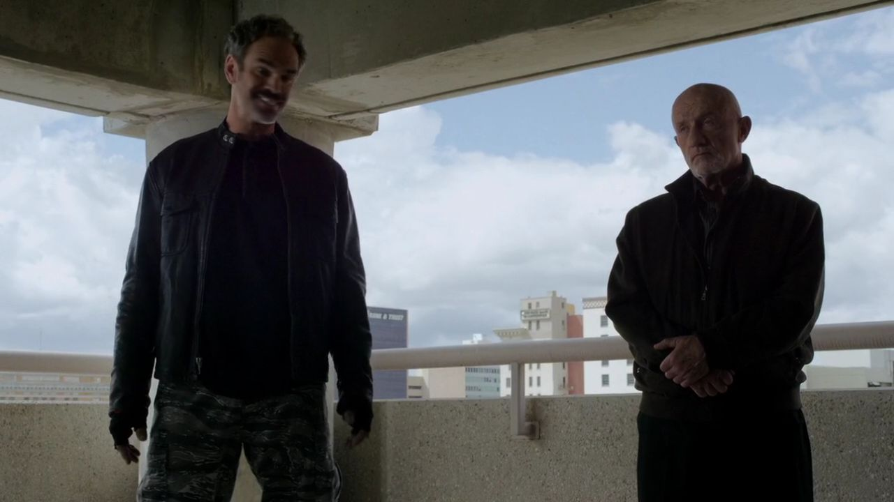
剧情事实迈克应聘保护普赖斯，与另外两名保镖碰面。他没带枪，索布恰克嘲笑并挑衅；迈克将其制服，另一人离开。 [1][2]
本集标题里的午餐先让他显得不合职业想象，下一步却显示他并非没有准备。索布恰克把装备当成能力的全部证明，迈克更关心对方会做什么、任务究竟有什么风险。外观上的压迫感与真正的控制能力，在这里被拆开。
因此 →普赖斯最后带着这个看似不够凶的帮手去交易。
案件工作与保镖任务都在检验何谓真正准备。
收下成果，却不收下发现成果的人。
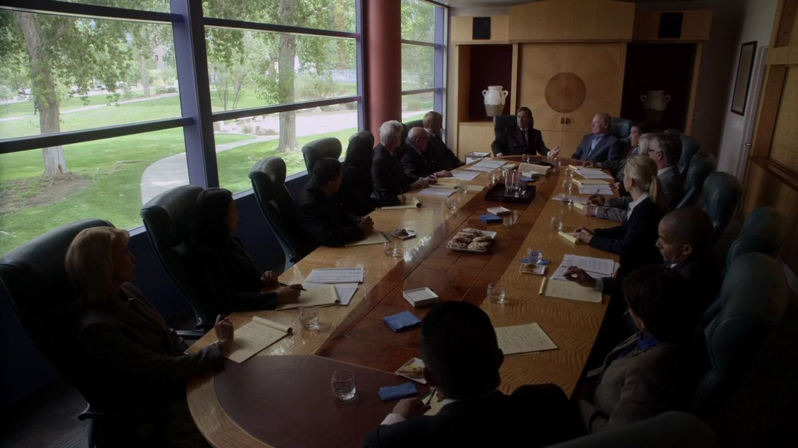
剧情事实律所为查克的到访采取避电安排。会谈中，霍华德愿以费用和未来分成接手沙鹬案，却明确不让吉米继续作为团队成员参与。 [1][2]
同一间会议室里，哥哥的需要被提前理解，弟弟的期待被程序化地拒绝。案件有价值，发现案件的人却不能进入。这比单纯说对方不够好更伤人，因为他的实际贡献已经摆在桌上。
因此 →吉米拒绝条件，金也开始追问为何总是他被排除。
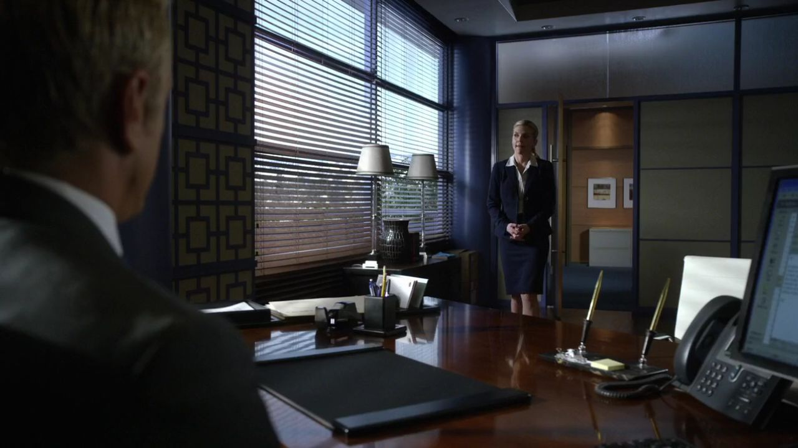
剧情事实金质问霍华德为何拒绝吉米。霍华德先保持机构立场，随后把她留住，私下说明情况；她后来的建议发生了变化。 [1][2]
剧集暂时不让观众逐字听见全部解释，保留金与吉米之间的知识差。她可能比朋友知道更多，却仍需要在职业关系和私人关切之间行动。不能把一段劝他接受的建议，简单当作她突然不再在乎。
因此 →另一场谈判中，迈克正示范怎样把已知条件落实到钱上。
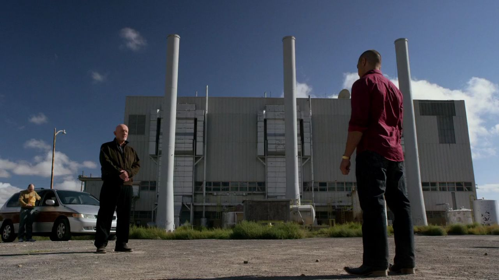
剧情事实迈克陪普赖斯交付偷来的药品，对方是纳乔。款项少了二十美元，迈克要求补齐，交易没有因此失控。 [1][2]
他事先研究纳乔，判断这次私下交易使对方不愿惹出更大动静。坚持少掉的小额并不只是逞强，而是基于对具体利益的判断。画面因此与停车楼的装备争执互相回答：准备可以存在于别人看不见的地方。
因此 →普赖斯开始把这次顺利交易当成继续做下去的理由。

剧情事实迈克向普赖斯说明，对方已经因为偷药出售而成为犯罪者；一个人是否算好人，与是否越过法律是不同问题。他也说明自己对任务风险的判断。 [1][2]
他的分类有清醒之处，也有局限：能看懂边界，不等于自己从未越过。观众刚在第六集看过他的过去，不应把这段话当成绝对无瑕的道德宣言。它首先展示这个人怎样为接下来的行动建立自己的规则。
因此 →吉米那边，同样的“你算不算真正律师”正在等待答案。
机构拒绝与交易规则，展示不同的判断尺度。
终于把明面的拒绝接回私人的关系。
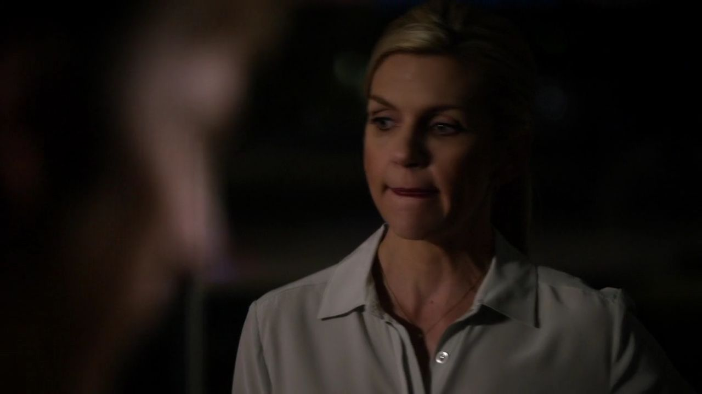
剧情事实金劝吉米接受费用与分成，用这笔钱继续建立自己的事业。吉米仍难以接受被排除，也不理解她为何替这个条件说话。 [1][2]
从生活上看，这是一条现实出路；从吉米的关系愿望看，它却等于承认他不能与哥哥一起留下。他真正索取的不只是更高价格，所以再合理的数字也无法直接触及受伤的部分。
因此 →不甘让他回头检查那部夜里被用过的手机。
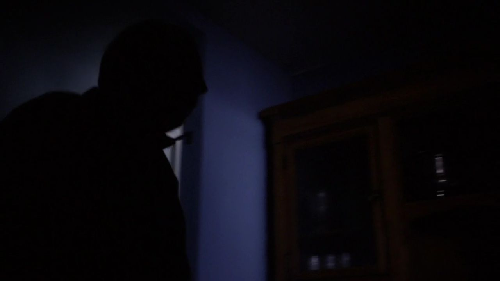
剧情事实吉米察觉手机曾被查克使用，结合与律所的通话线索，推断哥哥才是持续阻止自己进入 HHM 的人。 [1][2]
前面出现的电话获得意义，不是因为角色突然直觉全知，而是他开始把时间、接触和拒绝放进同一个解释。这个发现也会迫使他重看霍华德：明面上的人，也许一直在替另一个人承担怒气。
因此 →他带着推断回到哥哥面前，这次要求的是直接回答。
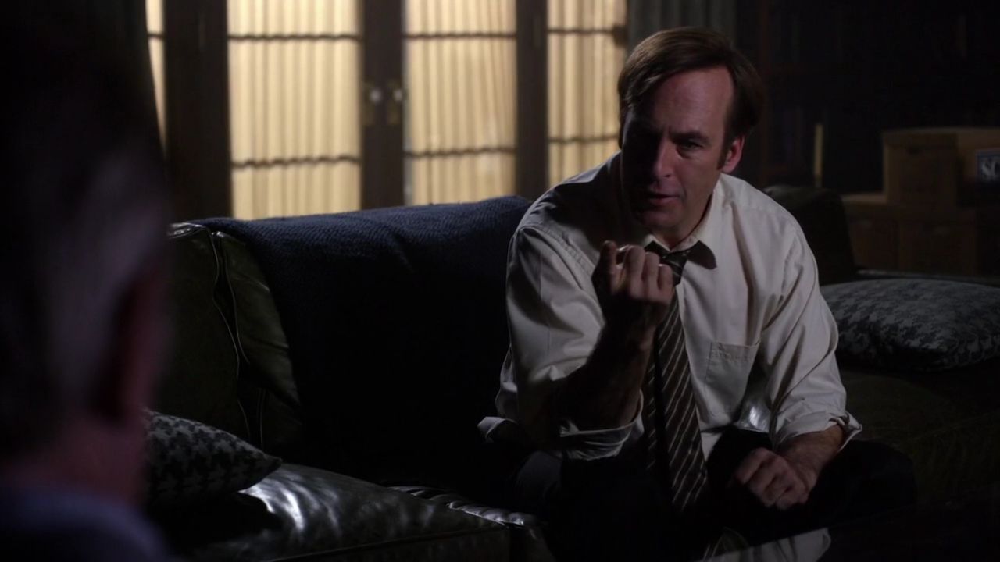
剧情事实吉米质问查克。查克承认阻止聘用，认为弟弟仍是靠骗术行事的人，不配成为真正律师，并强调法律的神圣与滥用的危险。 [1][2]
查克的担忧不是凭空捏造，吉米确实做过骗局；但他把旧习变成一种永不允许更新的身份判断。弟弟已经做出的调查劳动和改变，于是都不足以推翻最初的标签。原则在这里既有内容，也成了拒绝承认一个具体人的方式。
因此 →吉米失去的不只是一份职位，更是长期争取的哥哥肯定。
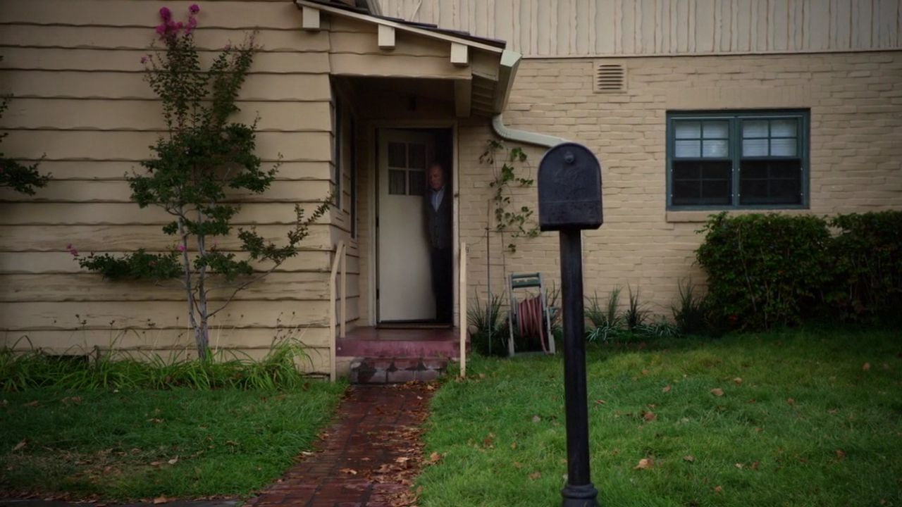
剧情事实吉米交代查克生活用品与日常所需，表示自己无法继续像此前那样照料，随后离开。查克独自留在家中。 [1][2]
收尾没有把伤害变成更漂亮的一段演说。照顾哥哥的长期劳动，原来也是关系最具体的部分；当弟弟不再亲自来，它的缺席就能被看见。吉米已经知道原因，却还不知道知道原因之后该怎样生活。
因此 →第一季最重要的一次认可请求，在这里断开了。
原则、旧名声与亲人的承认，在一场争吵中正面相撞。
切换故事阶段，再点击角色，查看本集行动、个人诉求与关系变化。
兄弟面对工作量，迈克接到保护交易者的任务；两条线分别推进。
本集并置沙鹬案与药品交易两条线；迈克等人没有参与兄弟的聘任争议，吉米也不在这次药品交易现场。 人物照统一登记并跨集复用；阶段说明含个人解读，连线不表示每个人已知道全部信息。
只用本集完成的揭示回看此前已见行为，同时保留那些行为本身的真实。
个人解读会议室的拒绝曾使霍华德看起来像全部阻力，家中的承认则把另一层关系放到光下。好的回看不是宣布前面所有帮助都虚假，而是允许一个人同时真诚合作、又坚决不愿接纳弟弟成为同事。
四组冲突深读 · 以下为个人解读，事实边界随卡片标注。
查克可以列出弟弟做过的骗局，也确实知道律师权力可能伤人。问题在于，他把这些真实担忧变成一种永不更新的身份：吉米仍是那个骗子，新的劳动也只能被放回旧框架理解。
弟弟带来的案子已经证明观察、勤奋和专业成长，哥哥却仍拒绝让它改变评价。因此这次争吵不只是原则与投机的简单对打，也包含谁有权决定另一个人的改变永远不够。第八集的真诚合作没有因此变假，正因为真，断裂才更深。
事实边界：本集揭示阻止聘用，不因此认定此前每次照顾和帮助都是骗局。
英文短句核对非官方对白转录；中文为本页自译，潜台词属于个人解读。
You're not a real lawyer.你不是真正的律师。中文自译
吉米要求哥哥解释为何一直阻止自己被聘用。
证书和实际劳动都不足以改变这句身份判定，因此伤害落在“你究竟是谁”。
本页选用短句共 17 个英文词。配图呈现相应人物与场景，不逐句指认发声瞬间。核对对白来源 ↗
只在截至本集的情节中阅读；以下均为个人解读。

他终于听到哥哥亲口说出的理由。
知道之后，他没有新的胜利台词，
只把每天都会到来的自己带走了。
已经知道 · 剧情事实查克承认持续阻止吉米进入 HHM；吉米离开。迈克完成普赖斯与纳乔的交易保护。
还不能预先回答吉米会怎样处理案件与关系、这次伤害将如何改变事业，留到季终与后续。
剧透截至第一季第9集，包含本集结尾。不涉及后续集数或《绝命毒师》的具体揭示。 不用后续的结果，替此刻的人物决定动机。